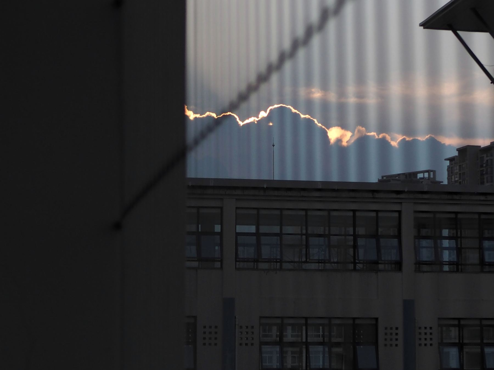

01
2022—2023
起步 · 街巷
第一批照片里有一只猫，我按了快门，然后什么也没想。
相机是借来的，存储卡是最便宜的那种。我不知道该拍什么，就对着能看见的东西按快门。
那批照片有一只坐在干草里的猫，有一个写着「40」的限速牌，还有一张被电线切开的天空。
后来整理的时候我才发现，我一直在拍同一件事：光落在什么地方。

Notes from the field · 2022—2026
相机是借来的，存储卡是最便宜的那种。我不知道该拍什么，就对着能看见的东西按快门。
那批照片有一只坐在干草里的猫，有一个写着「40」的限速牌，还有一张被电线切开的天空。
后来整理的时候我才发现，我一直在拍同一件事：光落在什么地方。
那是一个傍晚，我在教学楼之间绕了很久，找一个能把天空放进画框的角度。
最后停在一堵墙和另一栋楼之间：左边全黑，右边云缝里有一条正在烧完的光。
那张照片后来成了整个作品集的开场。我想，拍光就是拍它只剩下几分钟的那段时间。

同一天上午我还在校园里拍过一片田野，到了下午，人已经在另一座庙的檐下。
屋檐把天空切成一条很窄的缝，鸟群从缝里过。我举着相机等了四十分钟，
拍到的全是飞行中的一团影子，没有一张是停住的。
后来我才明白，鸟不下来才是那座庙真正的样子。

银杏最好看的那天也是人最多的那天。我换了三个位置、五个时间，
最后选的是早上七点，整条路是金的，只有扫地的阿姨在画面边缘。
她没有抬头，那张也没有。

第一天的照片全是地标，很努力，很一般。
第二天下雨，我在便利店门口坐着，看鹿在公园里低头，看路口的车灯把雨照成两条线。
我一张也没有拍。那天晚上整理，决定只留三张。

相机包里还剩一台微型无人机，那天海边风很大，没有起飞。
我就坐在堤上，看一个人背对着水拍照，看了很久。
后来那张背影也成了这一组里我最喜欢的一张。